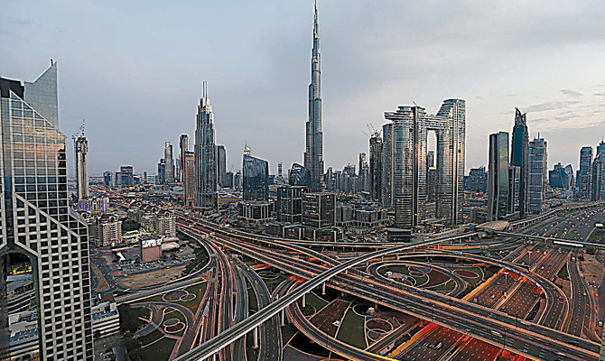

Rubrik
The United Arab Emirates (UAE) is a federation of seven states, one of the Middle East's most important economic centers. It is a conservative country, but even so, it is considered the most liberal country of all the countries of the Gulf, such as Saudi Arabia, Iran and Oman, with which it has a border, where other cultures, religions, or foreign traditions are not equally accepted. The current president of UAE is Mohammed bin Zayed, he was born in 1961 and got to the presidency after the death of his half-brother in 2022.
The UAE is a very rich country due to its large oil reserves discovered in 1950, and until then the country was economically dependent on fishing. They currently hold 6% of all the world's oil reserves and the seventh largest natural gas reserve in the world. These oil and gas reserves represent 2/3 of the country's income, despite the fact that they are trying to change this by investing in the tourism sector, which has also been affected by the COVID-19 pandemic. Today this country is the third richest in the Middle East per capita. Due to the good economic situation in the UAE, it is the country with the most luxurious cars for the police, some of the cars are for example Lamborghinis or Bugattis, but not all of them are luxury cars, there are also more common cars like Toyotas, Nissan, etc.
The UAE flag is a symbol of pride, strength, and unity, its colors are based on its history. The flag was designed by a British soldier and diplomat during World War I to promote unity among Arab forces against the Ottoman Empire. The interpretations of the colors of the flag are:
- red for sacrifice and bravery
- white for peace and generosity
- green for growth, prosperity and progress
- black for Power and strength.